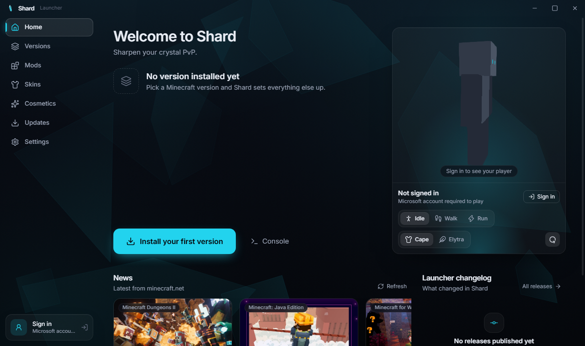

Sharpen your crystal PvP.
Shard is a free launcher for Minecraft 1.21 and newer. Pick a version and it sets up Fabric, the Shard client and a tuned performance mod set for you. Nothing to configure.
Also for macOS and Linux · All releases

Everything in one place
Shard replaces the vanilla launcher, a mod manager and a hand-built modpack with a single app.
Any 1.21+ version, one click
Instances for every Minecraft release from 1.21 onward. Java, Fabric, libraries and assets download automatically and resume if your connection drops.
Shard Core, tuned for fights
Sodium, Lithium, Iris, Entity Culling, FerriteCore, ImmediatelyFast, Krypton, Dynamic FPS and friends ship with every instance and update themselves.
The Shard client, installed for you
A legit Fabric client with a click GUI, HUD editor and visual modules built for crystal PvP. New builds install on the next launch.
Skins and cosmetics
A 3D skin viewer, a wardrobe of capes, wings and hats, and an emote wheel. Equip once and every instance picks it up.
Shared settings across versions
Options, servers and mod configs are synced between your instances, so a new Minecraft version feels exactly like the last one.
Microsoft sign-in, kept on your PC
Sign in with the account you already own. Tokens stay on your machine and are never sent anywhere except Microsoft and Mojang.
Portable or installer?
Both are the same launcher. Most players want the portable one.
| Download | What it is | Best for |
|---|---|---|
| Portable (.exe) | One self-contained file. Download, double-click, play. Nothing is installed; the Updates tab links you to the newest build. | Trying Shard, USB sticks, shared PCs. |
| Installer (x64 / ARM64) | Adds a Start menu entry and a desktop shortcut and updates itself in place. | Your main gaming PC. |
Fair play, by design
Shard is a legit client. It is built to be allowed on servers, not to sneak past them.
- No combat or inventory automation. No aim, reach, velocity or auto-totem.
- No movement or timing changes and no packets the vanilla client would not send.
- No hidden-information rendering. If vanilla cannot show it, Shard will not either.
- Features some servers still restrict, like Freelook, carry a per-server blacklist that turns them off there.
Questions
Short answers. The README on GitHub has the long ones.
Windows says "Windows protected your PC". Is this safe?
macOS says the app "is damaged" or "cannot be opened". What now?
Do I need to own Minecraft?
Where does Shard keep my files?
%APPDATA%\Shard on Windows (instances, Java, assets, skins, logs). Set SHARD_DATA_DIR to move everything, or pick a folder in Settings.